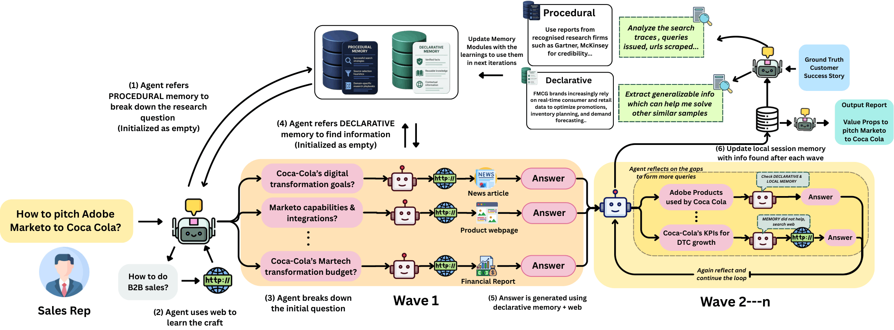

MEMENTO: Leveraging Web as a Learning Signal for Low-Data Domains
Get in touch with us at behavior-in-the-wild@googlegroups.com

Abstract
Real-world tasks often lack large labeled datasets, motivating extensive work on learning in low-data regimes. However, existing approaches such as few-shot prompting, instruction tuning, and synthetic data generation, continue to treat labeled or pseudo-labeled data as the primary learning signal. In contrast, human practitioners acquire expertise through repeated, self-directed interaction with the open web, progressively refining both domain knowledge and search strategies. We propose MEMENTO, a framework that treats the web as a learning signal rather than a stateless retrieval interface. MEMENTO operates at two levels: within each session, it conducts iterative web exploration via an Adaptive Exploration Tree (AET) that decomposes tasks into evolving questions and reflects on intermediate findings; across sessions, it accumulates experience through dual-channel memory, separating declarative knowledge (facts) from procedural knowledge (search strategies). This design enables agents to learn reusable research strategies and domain expertise from trajectories of web interaction without additional model training. We evaluate MEMENTO on two low-data professional domains: sales automation and legal research. Our empirical results show consistent improvements in performance over ReAct-based baselines (+25.6% on sales automation and +36.5% on legal research), demonstrating that the web can serve as a scalable learning source for acquiring task-specific expertise in data-scarce settings.
Key Contributions
- Web as a Learning Signal in Low-Data Regimes: To the best of our knowledge, the first framework to propose the open web as a learning signal for craft acquisition in domains where labeled supervision is scarce. MEMENTO uses research trajectories and accumulated factual knowledge to perform cross-session optimization, enabling agents to develop domain expertise without model fine-tuning.
- Adaptive Exploration Tree (AET): A within-session search architecture that decomposes research tasks into dynamic question trees, iteratively reflecting on discovered information to identify gaps and restructure search paths under a fixed budget, producing trajectories that are directed, self-correcting, and informative as cross-session learning signals.
- Dual-Channel Cross-Session Memory: Grounded in the declarative/procedural distinction from the integrated theory of mind, MEMENTO maintains two independent persistent memory stores. Procedural Memory distills query strategies, source credibility heuristics, and domain-specific search playbooks from prior trajectories; Declarative Memory persists verified facts and contextual knowledge across sessions.
- Empirical Validation: Consistent improvements over ReAct-based baselines on two structurally distinct low-data professional domains — +25.6% on sales automation and +36.5% on legal research — with ablations confirming that the AET and each memory channel contribute independently to the gains.
Architecture
Adaptive Exploration Tree (AET)
Within each session, the AET decomposes a research task into an initial set of sub-questions (Wave 1), answers each via web search, then reflects on accumulated findings to identify gaps and generates a new wave of queries. This cycle repeats under a fixed budget, building a session memory of discovered information that each reflective step can build upon.
Dual-Channel Cross-Session Memory
Declarative Memory stores verified facts and contextual knowledge from prior sessions, allowing future tasks to build on established foundations. Procedural Memory distills high-utility query strategies, source credibility heuristics, and domain-specific research playbooks from prior trajectories — capturing how to approach a domain, not just what is known about it.
Results
MEMENTO is evaluated on two low-data professional domains using ReAct-based agents as baselines:
| Method | Sales Automation (Qwen) | Legal Research (Qwen) |
|---|---|---|
| ReAct (baseline) | 0.461 | 0.592 |
| AET only | 0.552 (+19.7%) | 0.767 (+29.6%) |
| MEMENTO (full) | 0.579 (+25.6%) | 0.808 (+36.5%) |
- The AET contributes independently of cross-session memory — the largest single jump comes from replacing the flat ReAct loop with the hierarchical, reflective AET.
- Adding cross-session memory on top of the AET yields further gains: +4.9% on sales automation and +5.3% on legal research, confirming each component's independent contribution.
- Gains hold across two different backbone models (Qwen3-35B-A3B and GPT-5-mini), indicating that improvements stem from the cross-session learning architecture rather than the choice of underlying model.
BibTeX
@misc{memento2026,
author = {Ojha, Ashutosh and Aggarwal, Vinay and Srivastava, Ashutosh and Yedlapati, Siddharth and Singla, Yaman K and Ajmera, Jitendra},
title = {MEMENTO: Leveraging Web as a Learning Signal for Low-Data Domains},
year = {2026},
publisher = {Behavior in the Wild},
howpublished = {\url{https://behavior-in-the-wild.github.io/memento.html}},
}